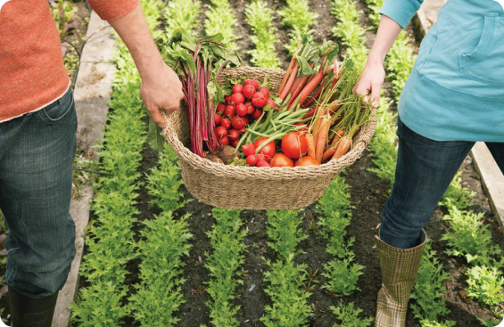

Os detalhes da WEROOTS que fazem a diferença
Uma rede de fazendas urbanas que produz hortaliças 365 dias no ano
O cultivo é feito por hidroponia, em estufas de alta tecnologia e ambiente controlado para que cresçam saudáveis e sem agrotóxicos
A produção é 28 vezes maior que o modelo convencional e o consumo de água é 90% menor